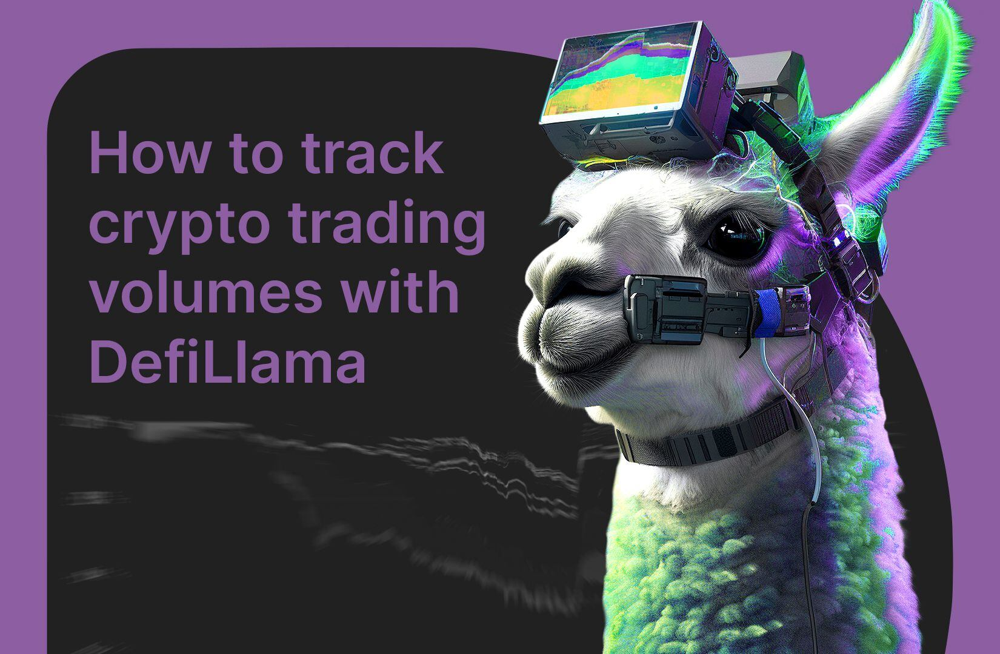

In decentralized finance, the true cost of a swap extends far beyond the token price; it includes volatile network fees (gas) and mandatory protocol fees. Defi Llama Swap's economic model is a masterclass in transparency and optimization. It operates on a **zero-platform-fee** principle, focusing its technical brilliance entirely on minimizing the two unavoidable costs: the gas fee and the underlying DEX's protocol fee. By making this optimization its core mission, Llama Swap consistently provides one of the most cost-effective execution layers in the multi-chain ecosystem.
Defi Llama Swap's fee calculation model is elegantly simple because it removes one major variable: the platform's own charge. The total cost to the user is a sum of only two components.
The first component is the **Protocol Fee**, which is the small percentage charged by the underlying Decentralized Exchange (DEX) or aggregator (e.g., Uniswap or 1inch) that executes the final trade.
The second component is the **Network Gas Fee**, which is paid entirely to the blockchain validators (miners) to process and secure the transaction; Llama Swap does not retain any portion of this.
The routing engine’s job is to select the path that minimizes the sum of these two components—Protocol Fee plus Gas Fee—to maximize the token output for the user.
Llama Swap presents this calculation with high transparency, breaking down the costs in the UI so the user can see the exact fee structure before confirming the wallet transaction.
Because the platform itself is free, the model is inherently user-aligned; the only goal is to find the lowest-cost route available across the entire fragmented market.
The calculation is dynamic and performed in real-time, accounting for the current gas price on the specific network and the unique fee structure of the chosen underlying protocol.
This commitment to a zero-platform fee is a massive incentive, as it ensures that the aggregator never introduces friction that might otherwise undermine the best price found by the routing engine.

Llama Swap’s ability to find the lowest gas routes is a key factor in its efficiency, leveraging both data intelligence and its meta-aggregation model.
The routing engine utilizes **real-time gas price APIs** to accurately forecast the cost of execution on various supported chains, ensuring that the fee estimate is as precise as possible.
A primary strategy is to prioritize routes that interact with **highly optimized smart contracts**, often those from newer DEX versions or established aggregators known for their gas efficiency.
The system intelligently favors trade paths that require fewer **contract calls** or less complex logic, as each interaction with a smart contract increases the final gas consumption.
For large trades, Llama Swap will assess whether it is more cost-effective to execute the swap on a cheaper Layer 2 network (like Arbitrum or Optimism) rather than the Layer 1 (Ethereum), even if the L1 has slightly deeper liquidity.
By incorporating the best routes from gas-specialized aggregators (a core part of the meta-aggregation), Llama Swap benefits from their proprietary, gas-saving smart contract logic without needing to reinvent it.
The routing engine understands that sometimes, a multi-hop swap using highly efficient pools can paradoxically be cheaper than a direct swap on a single, less efficient but more popular pool.
This dynamic optimization ensures that the gas cost is treated as a critical variable in the final price calculation, driving users towards the most economically viable execution path.
Defi Llama Swap’s multi-chain support is a powerful tool for network fee comparison, empowering users to make strategic decisions about where to transact.
The platform provides a clear, real-time overview of the current gas costs across all supported networks, allowing a direct comparison of the execution environment.
This transparency highlights the massive cost advantage of transacting on Layer 2 solutions (e.g., Polygon, Arbitrum, Base) compared to the main Ethereum Layer 1, where gas can be prohibitively expensive.
By making these comparisons explicit, Llama Swap encourages liquidity to flow towards lower-fee chains, fostering a healthier and more scalable decentralized ecosystem.
The cross-chain routing functionality performs the ultimate fee comparison: it calculates whether the combined cost of the swap *and* a bridge fee is still cheaper than a direct, expensive L1 swap.
For developers, the API provides the necessary data to build applications that automatically select the lowest-fee chain for a swap, provided the required liquidity exists there.
The platform's data engine is constantly updating to reflect network congestion, ensuring that the displayed fee comparison remains relevant and accurate, especially during periods of high volatility.
This explicit fee comparison turns a complex technical decision into a simple economic choice for the user, democratizing access to the most cost-efficient execution available in DeFi.
Traders can implement several effective cost-saving strategies by leveraging the features and transparency offered by Defi Llama Swap.
The most basic strategy is **Chain Selection**: always checking the fee comparison to see if the desired token can be swapped on a cheaper Layer 2 instead of the expensive Ethereum mainnet.
Traders should utilize the **Optimal Routing** feature by always starting their swap on Llama Swap, guaranteeing that the best price, inclusive of all fees, is found before execution.
**Timing Trades** is also crucial; by monitoring gas price trends on the Llama Swap interface, users can choose to execute non-urgent trades during off-peak hours when network congestion (and thus gas) is lower.
When executing a large trade, traders should allow Llama Swap to **Split the Order**, as this often results in a lower overall price impact and a better effective execution price.
Users can actively compare the displayed protocol fee percentages of the underlying DEXs in the final route, often revealing small but meaningful differences between protocols for similar trades.
For cross-chain transfers, traders should use Llama Swap to compare the cost of a direct bridge versus a bridge/swap combination, often finding a significant total cost saving in the aggregated route.
Finally, carefully setting the **Slippage Tolerance** prevents failed transactions (which still incur a gas fee) due to extreme price volatility, saving the user the cost of a wasted transaction.
The fee transparency provided by Defi Llama Swap is a massive benefit, essential for building trust and enabling informed economic decisions in a traditionally opaque market.
Llama Swap ensures **No Hidden Fees**; every element of the transaction cost is clearly displayed, from the protocol's cut to the estimated network fee, eliminating surprise charges for the user.
This transparency is a form of **Consumer Protection**, allowing the user to verify the final price against market expectations before committing their assets to the transaction.
By explicitly showing which underlying protocol takes the fee, Llama Swap demystifies the transaction, giving credit to the liquidity provider and reinforcing the decentralized nature of the trade.
The clear breakdown allows traders to understand the **economic trade-offs**—for instance, deciding if a slightly higher protocol fee is worth paying for the certainty of a better execution price.
For auditing and tax purposes, the transparent fee structure makes it simpler for users to track their transaction costs accurately, a non-trivial benefit for frequent traders.
The commitment to transparency reinforces Llama Swap’s reputation as a **neutral public good**, as it positions itself as an open calculator rather than a profit-capturing entity.
Ultimately, fee transparency is the foundation of the platform’s trust model, ensuring that the user is always empowered with the exact cost knowledge needed for secure and optimal DeFi trading.
Dynamic routing is the technological core of Llama Swap's gas optimization, constantly adapting to the fluctuating conditions of the multi-chain environment.
The routing engine does not rely on a static "best route" but rather runs a full optimization search for every single quote request, factoring in the current **real-time gas price** and network congestion.
If gas prices spike suddenly, the dynamic router may instantly switch from a complex, multi-hop route (which might have been optimal minutes ago) to a simpler, more gas-efficient path to minimize cost.
The system dynamically incorporates quotes from aggregators specializing in "gas tokens" or unique gas-saving techniques, ensuring the best possible execution cost is always considered.
When searching for the optimal route, the algorithm employs a sophisticated weighting mechanism that balances the **cost of the trade (price)** against the **cost of execution (gas)**.
This weighting is dynamic; on a high-fee chain like Ethereum L1, the routing prioritizes gas-saving, while on a low-fee chain, it may prioritize a slightly better execution price.
The engine constantly monitors liquidity pool balances and smart contract efficiency, allowing it to dynamically avoid pools that have recently become imbalanced or slow, which could lead to high slippage and wasted gas.
This continuous, dynamic recalculation ensures that Llama Swap provides a "living" optimal price, reflecting the instantaneous economic reality of decentralized execution across all supported chains.
Defi Llama Swap drives system-wide economic efficiency by creating intense, perpetual competition among all underlying liquidity providers and protocols.
The aggregation forces DEXs to maintain the tightest bid-ask spreads and lowest protocol fees possible; otherwise, their liquidity is simply bypassed by the Llama Swap router.
This competitive pressure leads to overall **fee compression** across the entire DeFi ecosystem, a huge economic benefit for all traders, regardless of the platform they use.
By routing volume to the most capital-efficient pools, Llama Swap ensures that deployed liquidity is constantly utilized, maximizing returns for liquidity providers and increasing overall market depth.
The multi-chain aggregation promotes **economic equilibrium** by facilitating the rapid movement of capital toward the most cost-effective execution environments (e.g., L2s).
The platform’s function effectively reduces the cost of entry and operation for all traders, making high-frequency, optimized trading accessible to a wider user base.
By combining optimal pricing with gas optimization, Llama Swap achieves a state of near-perfect **transaction utility**, where the user’s capital is spent almost entirely on the asset and network security.
This relentless pursuit of economic efficiency is Llama Swap’s greatest contribution, transforming a fragmented market into a highly optimized, single-source trading environment.
/Everything-you-should-know-about-DefiLlama-1.jpg)
While specific user data is private, the economic impact of Defi Llama Swap can be illustrated through hypothetical, but highly representative, case studies.
Consider a large trade of $100,000 USDC for ETH: without Llama Swap, a trader might send the entire order to Uniswap V3, incurring significant slippage and a high gas fee on L1 Ethereum.
With Llama Swap, the order is split and routed: $30k to Curve, $40k to Uniswap, and $30k via a gas-optimized aggregator, resulting in 0.2% less slippage and a saving of hundreds of dollars in execution cost.
Another case involves a cross-chain swap: transferring assets from Ethereum to Polygon. Llama Swap calculates that swapping on Ethereum, bridging, and swapping again on Polygon, is $50 cheaper than simply using a direct, high-fee bridge service.
During peak congestion, a small $500 swap on Ethereum might cost $30 in gas. Llama Swap’s dynamic routing avoids the most complex contract calls, securing a route that reduces the gas cost to $25, yielding a 16% saving on the execution fee.
A multi-hop trade for a less-liquid token, like a small governance token, might be routed through three different pools. Llama Swap finds the optimal path that yields 1.5% more tokens than the direct route offered by a single, standard DEX.
The most compelling case is the cumulative saving over time: a frequent trader executing 50 swaps a month, each saving $5 in execution costs, saves $3,000 annually simply by using the free meta-aggregator.
These scenarios illustrate that the platform's value isn't just in large, one-time savings, but in the consistent, algorithmic optimization that translates directly into higher returns for all users over the long term.